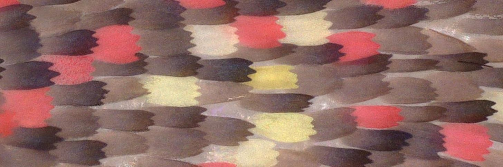
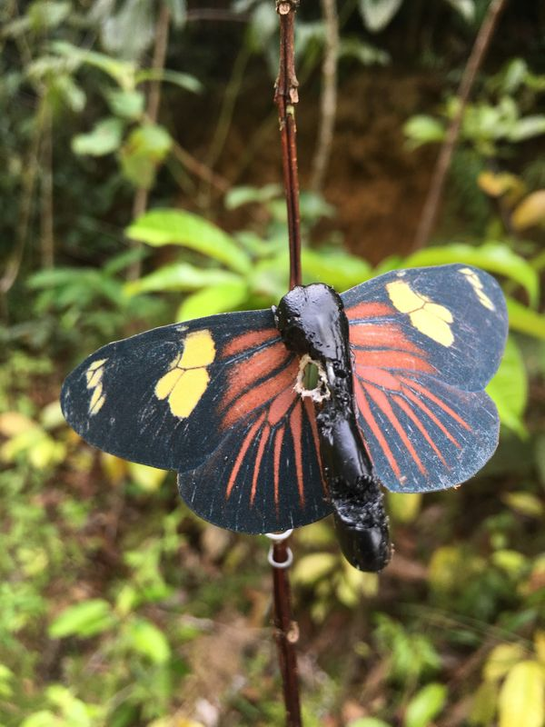
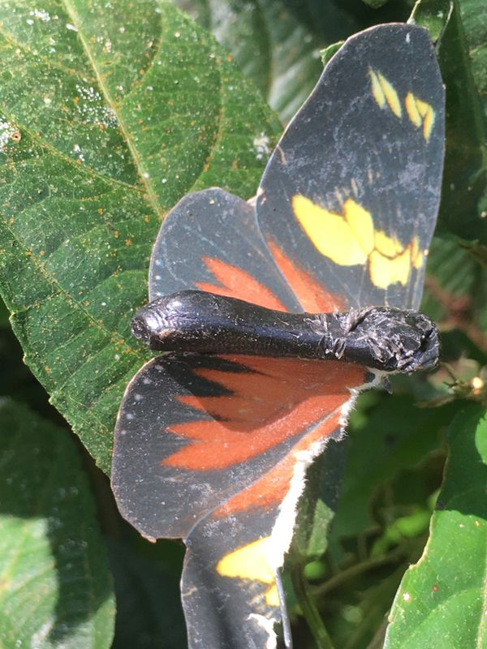
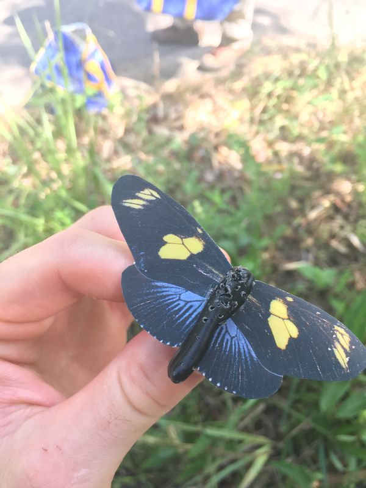
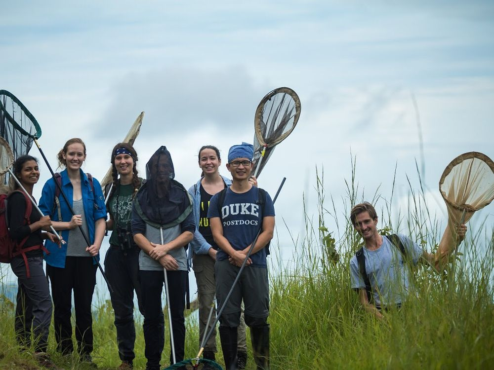
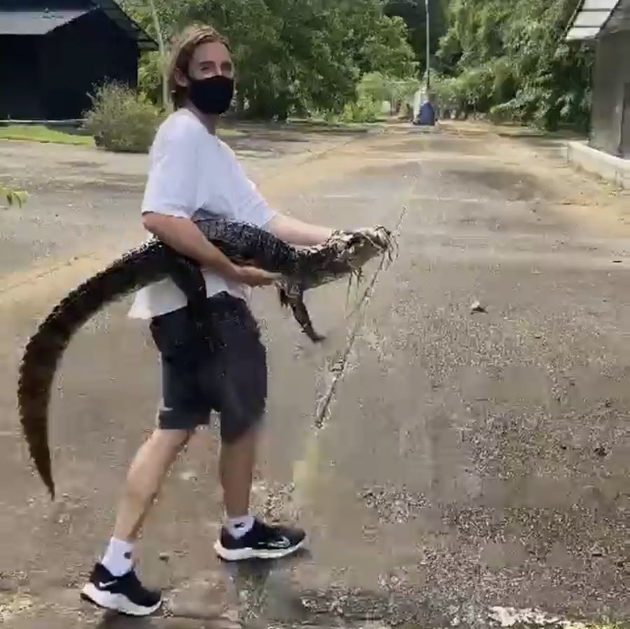
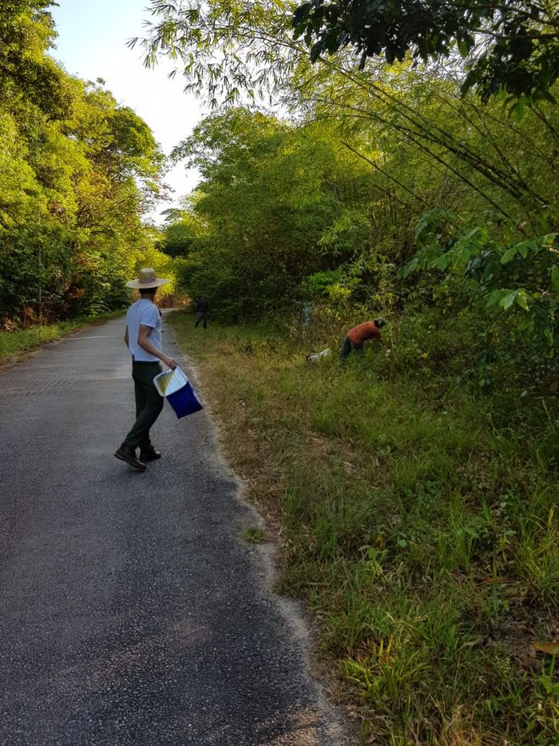
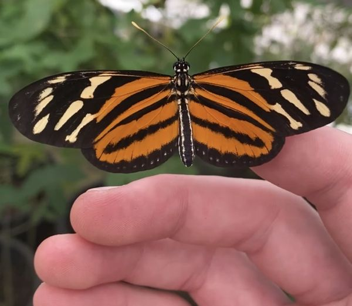
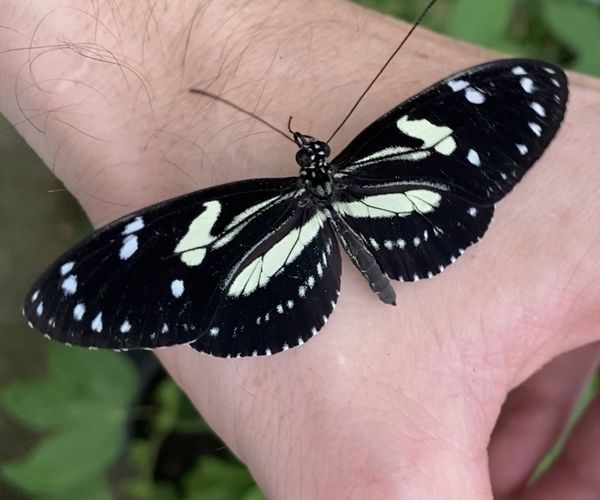
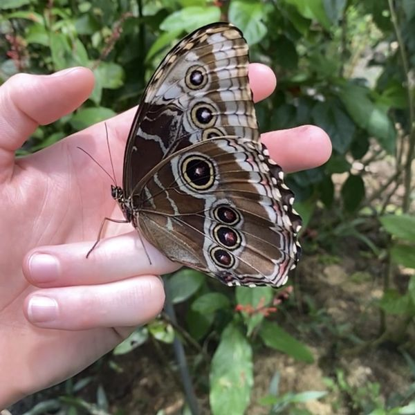

In brief
I study how new warning colour patterns arise in Heliconius butterflies, and what hybridization between species contributes to that process.
My work centres on how genes control colour patterns in butterfly wings. Much of what makes one pattern differ from another lies not in the genes themselves but in the regulatory DNA around them, and in how that DNA folds to contact them. I combine genome sequencing, 3D chromatin mapping, protein–DNA binding and gene expression data to trace how these regulatory switches evolve, and how hybridization between different colour pattern populations can bring different switches together to create something new.

In the field





Appointments & awards

Pre-Doctoral Fellow
Education
PhD, Evolutionary Genomics
Advisor: Dr Brian Counterman
MSc, Zoology
BSc, Ocean Science
Publications

Multi-locus diversification underlies the origin of a hybrid wing colour pattern In revision
Hybrid speciation
Selected talks
The evolutionary pressures and genetics of wing pattern variation in Heliconius butterflies
The evolution of polymorphic mimicry in Heliconius butterflies
The selective pressures maintaining polymorphic mimicry in a Müllerian mimic
Skills

- Multi-omics
- RNA-seq, ATAC-seq, ChIP-seq and Hi-C: QC, alignment, quantification, differential and peak-based analyses
- Genomics
- Regulatory and 3D genomics, variant calling and genotyping (GATK), annotation-aware analyses, integration of multi-omic datasets
- Computation
- Python, R, bash, Linux/HPC, reproducible analysis workflows
- Statistics
- Statistical reasoning and validation of biological claims
Other experience

Fundraising & Events Coordinator
Intern Ecologist
Translator, Spanish–English
Contact
I'm glad to hear from people working on evolutionary genetics, gene regulation or tropical biodiversity, and from anyone interested in collaborating. Email jgo0012@auburn.edu.
Languages: English and Spanish (native), Portuguese (basic).
References available on request.
Full publication record on ORCID.